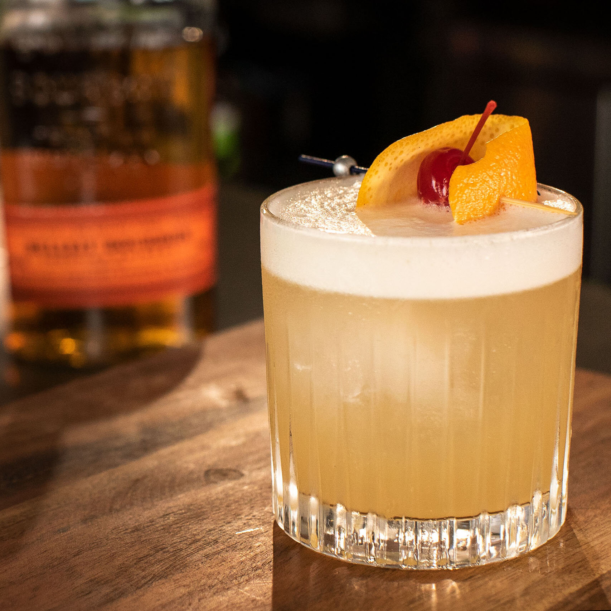

Whiskey Sour

Description
This classic recipe yields only for a few ingredients, but brings a complex and amazing taste.
Whether you are a bourbon lover or not, a well made whiskey sour is always great to sip in a classy bar or at home.
Ingredients
- 2 oz Woodford Reserve bourbon
- 0.75 oz lemon juice
- 0.75 oz simple syrup
- 1 egg white
Drops of Angosture bitters
Steps
- Prepare a shaker, your ingredients, and ice
- Add the bourbon, simple syrup, lemon juice and the egg white to your shaker
- Give it a firm dry shake for about 30 minutes
- Add ice to your shaker and give it another shake
- Pour the mix into a rocks glass through a strainger, then add a few drops of Abgostura bitter on the foam
- Enjoy!